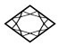
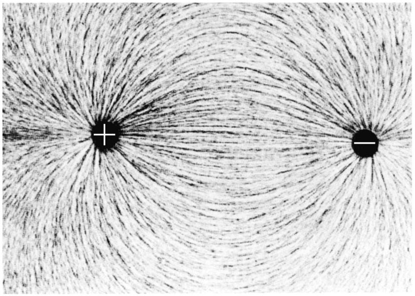
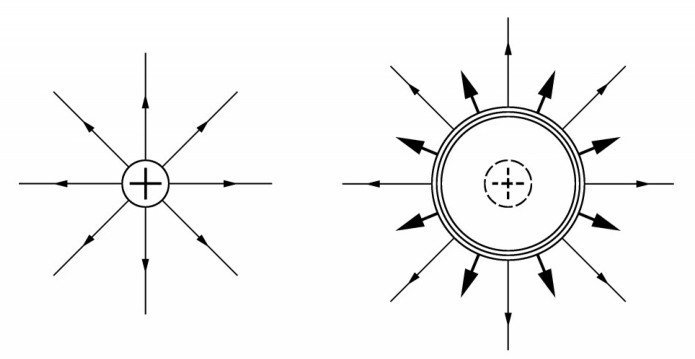
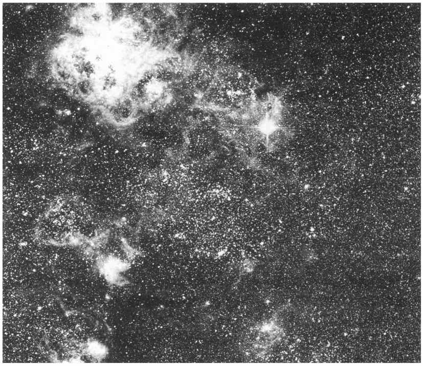

第八章第二天一早，我和牛顿在旅馆碰面，一起吃早饭。他的眼睛里布满了血丝，而且看上去很疲倦。昨晚他必定是花了不少时间，试图使自己的世界观与前一个晚上在爱因斯坦寓所里所获得的新信息相适应。
简单说了几句话后，我问他是否改变了他对光速的想法。
牛顿 （勉强地微笑）：我把那当作是个不需要回答的问题。当然，我已经改变了我的观点；在爱因斯坦和你把所有那些连珠炮式的理由倾泻给我之后，我还能怎样呢？我无法与由实验证实的事实抗争。毕竟，物理学从根本上讲是一门实验科学。
不过，你尽可以放心，我只花了一会儿工夫就把普适不变的光速融入了我的世界观中！也许我应该说，我仍然在这么做。可是还有些模糊的地方，我希望我们能马上澄清。
对于普适的光速，我还有一个问题。最初，迈克耳孙和莫雷的用意是测量地球相对于以太的运动。他们力图通过证明光速取决于它的传播方向来实现这个目的。昨天我们比较详细地讨论了这个实验的结果，结论是没有发现任何效应。而且除此之外，还有几个已经由实验证明了的事实也支持光速不变。
哈勒尔 （打断了牛顿的话）：是的，但请允许我补充一句，我们正在讨论的是光信号在真空中的传播。在其他介质中，比如说在水或玻璃中，光传播的速度比在真空中慢一些。这是很容易理解的。如果光不得不在像水这样的介质的原子中穿行，我们会预料到，它传播的速度会慢一些。
牛顿： 的确如此。可那是具体材料的效应，并不具有根本的重要性。当然，我所讲的是光在真空中的传播。我们不得不从迈克耳孙—莫雷实验的结果中得到否定的结论，即不存在以太这种东西。光不借助任何东西怎么能在真空中传播呢？光不借助介质来传播，这可能吗？
哈勒尔： 我正等着那个问题呢。可是你所说的光波不借助任何东西而在真空中传播，那也不是很正确的。光是在空间中和时间中传播的。
在谈话过程中，牛顿的目光中已毫无倦意。现在他已面露喜色了。
牛顿： 你是在讲空间和时间真的扮演了以太的角色吗？
哈勒尔： 说实在的，我们还不太明白光和物质以及它们的原子和粒子究竟是什么。一些物理学家猜测，光实际上是时空的一种隐性质（hidden property），它具有几何意义。换句话说，时空不仅具有3个空间维度和1个时间维度，还有其他的不可直接感知的性质。它们只能被间接地认识到，比如通过光的现象来认识。
有些物理学家竟然说空间、时间和物质只不过是一些潜在的几何结构的不同表现。根据那种观念，世界上什么也没有，它只不过是个几何系统而已。
不论那种解释正确与否，如今我们把光看作空间或时空的一种激发态，这是一种被称为场（field）的时空所具有的特殊性质，或者更具体地讲是电磁场的性质。
牛顿的眉头皱得更厉害了。显然，我所讲的某些东西不符合他对事物的看法。
牛顿： 现在我明白电磁场是什么意思了。即使是在我所处的年代，也已经深入细致地研究过电场和磁场这两种特殊的情况了。一正一负两个带电体之间的相互吸引只不过是围绕每个带电体的电场起作用的缘故。
磁力以类似的方式起作用。罗盘上的磁针由于受地磁场的影响而使自己排列成南北指向。几天前在剑桥浏览物理书籍时我还了解到，只有当电场不随时间而改变时我们才能得到单纯的电场。只要任何东西有了变化，比如，如果我把一个带电球体来回移动，立刻就会产生一个与电场相互关联的磁场。这些场中的一部分可能脱离运动电荷而形成电磁波。

图8.1 带相反电荷的球体互相吸引，在围绕球体的电场中可发现这种力的起源。有几种方法可以使场线变得可见。注意，这种场线总是始于并终止于带电体的表面。
哈勒尔： 正是这样。无线电波几乎就是这样产生的。一台无线电发报机本质上就是能产生随时间而变的脉冲电场的设备。这些振动的电场接着产生磁场，电场和磁场二者联合形成电磁波。
牛顿： 由于光波也是电磁波，因而就出现了这样的问题，即光是否也能由类似于你刚才所描述的方式来产生。
哈勒尔： 完全可以。比如，我们考虑电灯泡吧。这里光是来自因流经的电流使其受热而发光的导线。
牛顿： 可是，导线为什么能发射出光来呢？它为什么发光呢？
哈勒尔： 流经导线的电流是由在导线金属中流动的电子形成的，或者更准确地说，是由被电张力或电压推动的电子形成的。在这个过程中，它们不断地与金属中的原子也就是原子壳层中的电子碰撞，因此金属会热起来。换句话说，所有的粒子都快速地来回运动。金属中的电子当然是带有电荷的，因而它们开始发射电磁波，在这种情况下所发出的就是光。
我们继续谈论产生光的各种方式。原来，就在那天早晨，为了找到光真的能在一个长玻璃管里产生出来的证据，牛顿把他浴室的灯给拆开了。当然，那是一只荧光灯。我不得不为牛顿解释它的工作原理，这使我们径直进入了原子物理学。时间过得飞快，为了准时到达，我们不得不立刻起身朝爱因斯坦的寓所出发了。
我们沿着克拉姆小巷步行穿过了伯尔尼的市中心。走着走着，我的同伴又提出了他昨晚思考过的更多问题。
牛顿： 如果我理解得正确的话，电磁场（或者在最简单的情形中，围绕带电球体的电场）是独立存在的。它可以被看作空间或时空的一个性质；它有自己的寿命，这只间接地与电荷有关。借助某些技巧，我们甚至可以使这些场变得可见，我是在剑桥的一本书中发现这一点的。
可是，如果我突然去掉电荷，场又会怎样呢？它也会不得不以某种方式消失，因为没有电荷就没有场。
哈勒尔： 你说得很对，场当然会消失。在实验室中你可以从实验上做到这一点。只要给金属球充上电荷，然后突然去掉这些电荷。场会很快消失，这会以光速发生，因为不仅是光本身，所有电磁现象都是以光速传播。
牛顿： 假设我们正在做你刚才所描述的那个实验。你给你的球体充电，我来测量电场；或者更准确地说，我测量在某个给定距离也许是10米处的吸引力。现在你去掉电荷。如果我没搞错的话，最初我不会看到任何差别；场需要一些时间才能消失。可是光传播10米只需要十亿分之三十三秒。应该只需要这么短的时间我就可以看到你去掉了电荷。
哈勒尔： 从原则上讲，你是对的。可事实上不可能做这样的实验，因为我不可能在这么短的时间就去掉电荷。
牛顿： 当然，我只对原理感兴趣。现在开始说我真正的问题吧，这与电磁现象毫不相干，倒是与引力有联系。你知道，在我的《原理》中我阐述了普遍的质量吸引定律。 [1] 两个有质量的物体彼此吸引，吸引力的强度取决于每个物体的质量和它们之间的距离。质量越大，吸引力越强；距离越远，吸引力越弱。
我最初的信念是：这意味着一个物体对另一个物体的长程作用（long-range action）。换句话说，太阳吸引地球是因为，太阳的引力穿过太阳与地球之间的距离直接作用在地球上。但是我承认，对长程作用的观点我并不惬意。而且，既然我对电力和磁力又了解了很多，我就变得更加拿不准了。引力真的能穿过比地球与太阳之间的距离还大得多的距离而直接起作用吗？

图8.2 带电球体周围的电场被突然撤去。结果，从球面以光速辐射出电冲击波。电场慢慢减弱并最终消失。
哈勒尔： 你的怀疑是合理的。根据我们现在的发现，极长程的作用是不可能的。与电力一样，现在认为引力是由一种力场传递的，此处是指围绕所有有质量的物体的引力场。不妨说，物体的质量影响了它周围的空间。
牛顿： 这意味着存在像电磁波那样的引力波（gravitational wave）吗？
哈勒尔： 应该存在，可是到目前为止，我们还没发现明确的证据。 [2] 下面的思想实验暗示它们应该存在。假设我们突然去掉太阳，当然这不易做到，可是至少我们可以假设。毕竟，在太空中存在周期性的庞大星系的爆发，而且一旦发生这种爆发，与太阳质量大小相当的质量可以被抛到非常远的距离。我们所假设的突然去掉太阳的情形可以与那种爆发相比拟。
牛顿： 我猜想，你所指的是像1987年2月所观察到的大麦哲伦星云那种超新星爆发吗？
哈勒尔： 我知道你对现代天文事件了解不少。是的，我指的是超新星爆发。如果太阳突然消失，你认为地球上的观察者能看到什么呢？
牛顿： 对于地面的观察者而言，太阳尤其重要有两个原因：第一，太阳给我们光和热能；第二，太阳的引力迫使地球在一个几乎是圆形的轨道内围绕太阳运转。若没有太阳，地球上将一团漆黑，而且，我们的这颗行星也会飞入太空。

图8.3 1987年2月23日，天文学家目睹了一个极为罕见的事件：在大麦哲伦星云（我们的银河系的小伴星系之一）中有一颗超新星爆发，只有在南半球才可以看到这次爆发。在这张图片的右上角可以看到这颗明亮的超新星。
超新星爆发是巨大恒星的快速坍缩，同时伴随着巨大能量的释放。在几分之一秒内，就会发射出电磁冲击波。假定光从超新星处传播到地球需要160 000年，那么1987年看到的那次爆发就应该是发生在160 000年前的旧石器时代。由于它必定动摇了时空网，所以如果有正在运行的足够灵敏的探测器，在地球上就可以观测到它所产生的引力波。如果在可见的将来再发生类似的事件，我们会有更好的准备：正在发展中的采用激光技术的新探测器具有合乎要求的灵敏度。（承蒙慕尼黑和智利拉锡拉欧洲南方天文台惠允。）
光线从太阳到地球需要走约8分钟。这意味着，在太阳离去之后，地球上的观察者还能享受8分钟的阳光。
哈勒尔： 是的，只有8分钟。可是地球环绕太阳的轨道会怎样呢？
牛顿： 那是个棘手的问题。在我们讨论之前，我可能会说太阳消失后地球会立刻终止沿其轨道的运行，并且沿笔直的路径飞掉。可是，如果不存在超距作用——现在我确信不存在超距作用——显然就不会发生那种事。
哈勒尔： 你是对的，那是不可能的。确实，我们可以使太阳消失，至少在我们的思想中是可以的，可是那不能使它的引力场在瞬间消失。
牛顿： 换句话说，我们现在所谈论的很像前面讲到的那个突然消失的带电球体的例子。
哈勒尔： 完全类似。
牛顿： 那么我就明白了。与电场一样，引力场也是以光速去掉的。
哈勒尔： 又对了。场是以脉冲波的形式撤除的，这种脉冲波类似于我们向池塘中扔一块石头时产生的波。可是，我们现在谈的是引力波，它以太阳的先前位置为起点，像一个永远在扩大着的球体那样以光速向各个方向传播开去。这种波到达地球需要走8分钟，它到达时，地球将开始沿直线运动。几小时后，这种波将到达太阳系的外部。几年后它将到达最近的恒星，3万年后将到达银河系的中心。
1987年2月转变成超新星的那颗恒星必定发射了强大的引力波，这种引力波与来自超新星爆发的光信号几乎同时到达地球，即于1987年2月23日到达。遗憾的是，没人能记录下来，因为当时没有合适的探测器在运行。在以后几年中的某个时候，如果我们的银河系中有另一颗超新星爆发，我们可能会准备得好一些。
我们静静地走了几分钟，经过了著名的钟楼。牛顿沉浸在思考当中。突然我听到他自言自语：“因此肯定没错，电、磁和引力都与场有关，与时空的性质有关。简单而又巧妙。在伍尔斯索普时，我确实对此有所觉察。要是我那时就知道光速的首要意义就好了！”他继续自言自语，可我再也听不清他所说的话了。他肯定是在自言自语，所以我没问什么问题。此时我们走到了爱因斯坦的寓所。
钟楼的钟敲了10下。我们迟到了半小时。爱因斯坦到门口迎接我们，并没提迟到的事。
注解：
[1] 实际上说的是万有引力定律。——译者
[2] 引力波的存在已于2016年得到了实验证实。——译者